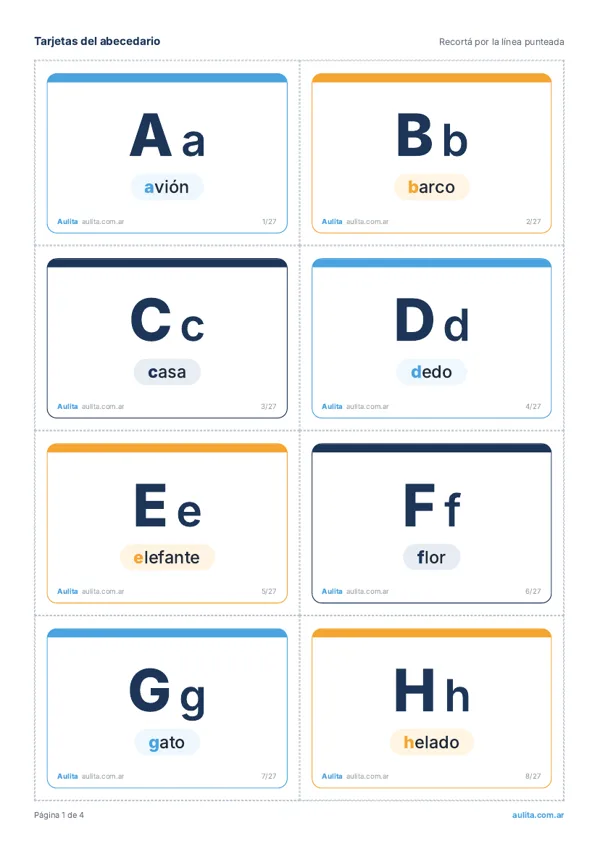
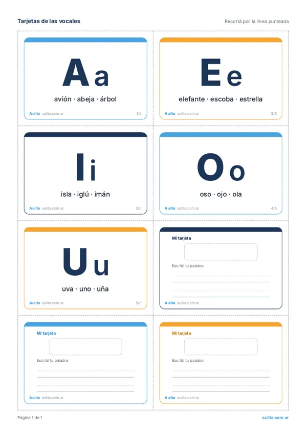
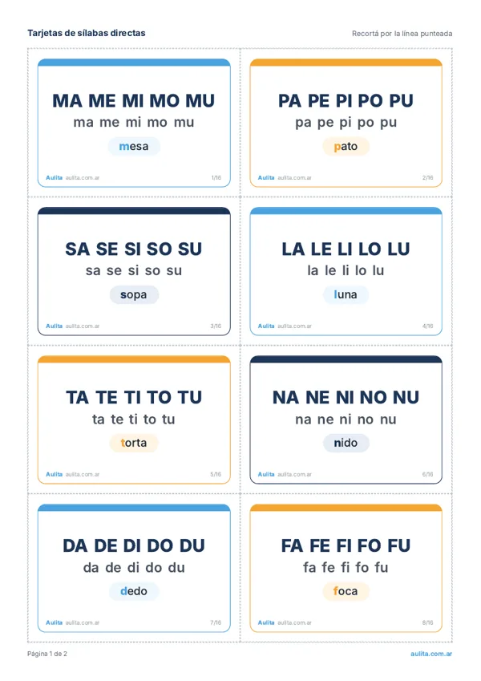
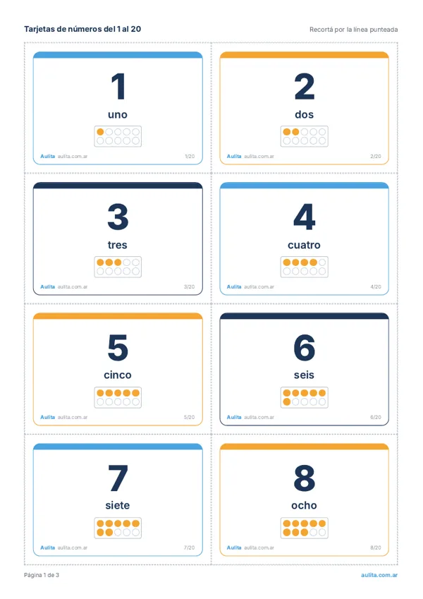
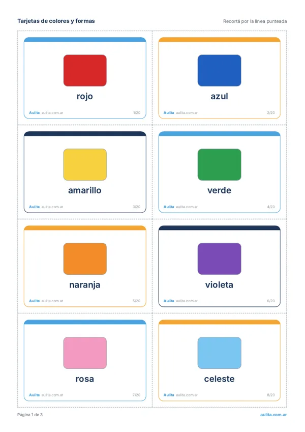
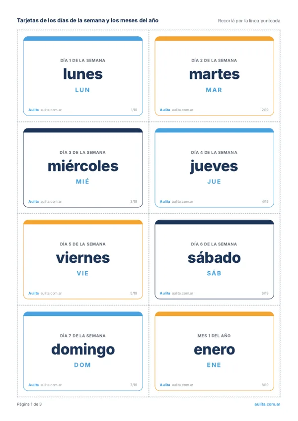

Inicio › Imprimibles › Tarjetas educativas
Tarjetas educativas para imprimir
Seis juegos de tarjetas en PDF, gratis y listos para imprimir en A4: abecedario, vocales, sílabas, números del 1 al 20, colores y formas, días y meses. Cada hoja trae 8 tarjetas con línea de corte y tarjetas en blanco para que cada chico arme la suya. También sirven como flashcards en español.

Tarjetas del abecedario

Tarjetas de las vocales

Tarjetas de sílabas directas

Tarjetas de números del 1 al 20

Tarjetas de colores y formas

Tarjetas de días y meses
Cómo usarlas en el aula
Cada PDF viene en A4 con línea punteada. Sale bien en blanco y negro.
Pegalas en cartulina o plastificalas si las van a usar todo el año.
Memotest, ordenar en fila, buscar la tarjeta que nombra la seño o armar el friso del aula.
Preguntas frecuentes
¿Las tarjetas son gratis?
Sí. Todos los PDF se descargan gratis y sin registro. Podés imprimirlos para tu aula o tu casa todas las veces que quieras.
¿Qué diferencia hay entre tarjetas educativas y flashcards?
Ninguna en la práctica: “flashcards” es el nombre en inglés de las tarjetas con una letra, número o palabra que se muestran rápido para repasar. Acá están en español y pensadas para la escuela argentina.
¿Se pueden imprimir en blanco y negro?
Sí. Los colores son suaves y las letras quedan en azul oscuro, así que se leen bien en una impresora común.